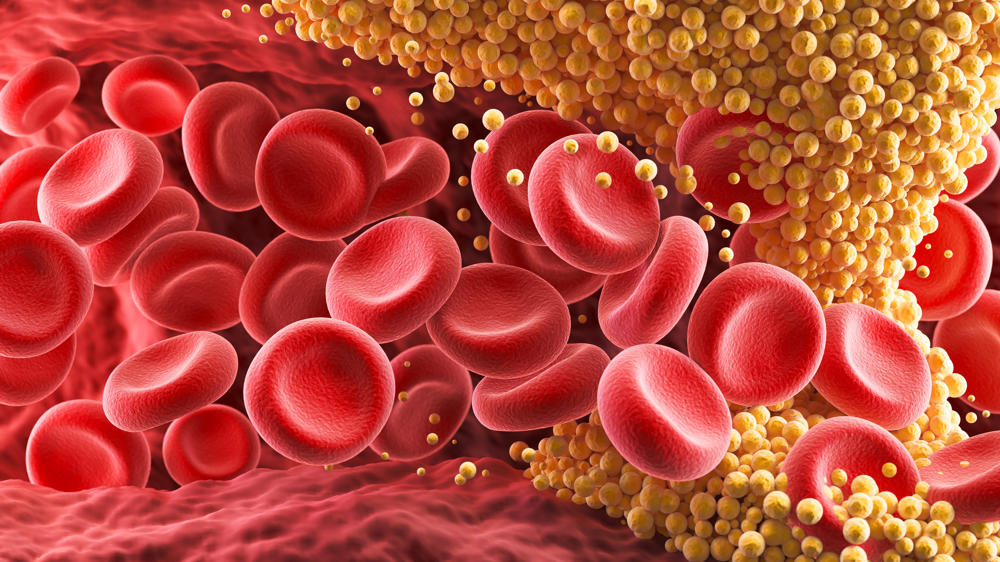
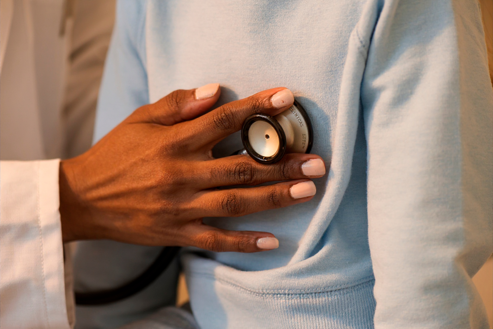
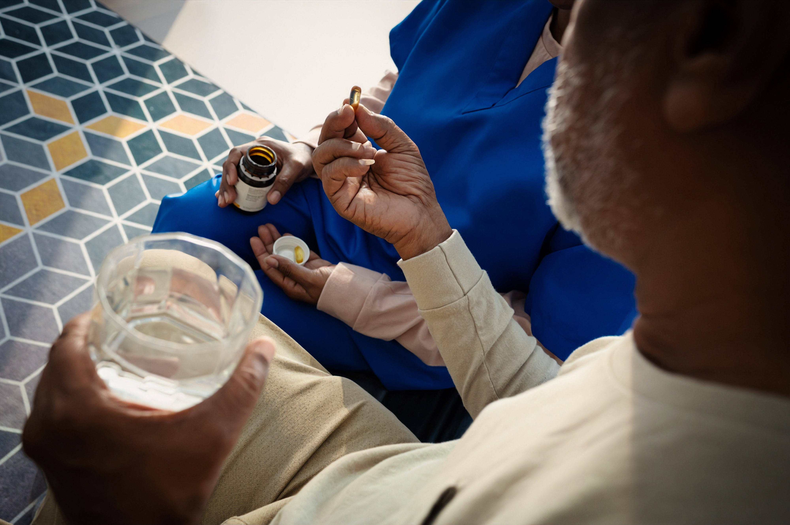

CID E78
Colesterol alto
O que é, sinais, metas, tratamento e acompanhamento.
Imagem meramente ilustrativa. Paciente fictício.
O que é colesterol?
O colesterol é uma substância gordurosa presente em todas as células do corpo. Ele é indispensável para o bom funcionamento do organismo, pois participa da formação das membranas celulares, da produção de hormônios, da vitamina D e dos ácidos biliares que auxiliam na digestão de gorduras.1
O corpo humano produz naturalmente cerca de 80% do colesterol, principalmente no fígado, e os outros 20% vêm da alimentação, sobretudo de produtos de origem animal, como carnes, ovos e laticínios.1
Para circular no sangue, o colesterol precisa se ligar a lipoproteínas. Entre elas, duas se destacam:

LDL (lipoproteína de baixa densidade)
Conhecido como colesterol ruim, pois, em excesso, pode se acumular nas artérias e formar placas, aumentando o risco de infarto, AVC e outras doenças cardiovasculares.1
HDL (lipoproteína de alta densidade)
Chamado de colesterol bom, porque ajuda a remover o excesso de colesterol, transportando-o de volta ao fígado, onde será metabolizado e eliminado.2
Por que o colesterol importa?
Manter o equilíbrio entre LDL e HDL é essencial. Valores elevados de LDL estão associados ao desenvolvimento da aterosclerose, que é o acúmulo de gordura nas artérias e pode dificultar a circulação do sangue.1
Níveis adequados de HDL têm efeito protetor e ajudam a reduzir o risco de complicações cardiovasculares.1
O colesterol exerce funções importantes no organismo:
Estrutural
Garante firmeza e fluidez às membranas celulares.1
Hormonal
Atua como precursor de hormônios esteroides e da vitamina D.1
Digestiva
Participa da formação da bile, que ajuda na quebra e na absorção das gorduras.1
O colesterol é essencial para a vida. O problema surge quando há desequilíbrio:
O excesso de LDL ou a falta de HDL podem comprometer a saúde cardiovascular. Por isso, é importante monitorar os níveis regularmente com exames de sangue e adotar hábitos saudáveis, como alimentação equilibrada e prática de exercícios físicos.1
Quais fatores podem estar relacionados ao colesterol alto?
Entre os fatores relacionados ao colesterol alto estão:
- alimentação rica em gordura;3,13
- sedentarismo, tabagismo;3,13
- histórico familiar;3,13
- idade avançada;3,13
- diabetes;3,13
- hipertensão.3,13
Quais são os sinais e sintomas do colesterol alto?
O colesterol alto é frequentemente silencioso e não apresenta sintomas perceptíveis, o que o torna um inimigo sorrateiro para a saúde cardiovascular.1,2
Geralmente, ele só é detectado em exames de sangue de rotina ou após eventos graves, como infarto.1 Mesmo assim, em casos raros, principalmente em condições genéticas, é possível observar depósitos de gordura na pele e nos olhos. Esses sinais físicos incluem:
Xantelasmas
Pequenas lesões amareladas nas pálpebras.3
Arco corneal
Anel cinza ou branco ao redor da córnea.4
Xantomas
Pequenos nódulos gordurosos em tendões e articulações.3
Além dos sinais externos, os perigos do colesterol alto costumam surgir indiretamente, na forma de doenças associadas.
A longo prazo, a aterosclerose pode levar a sintomas como dor no peito, falta de ar e fadiga geral, que podem indicar redução do fluxo sanguíneo para o coração ou o cérebro.5
Qual é o nível de colesterol ideal para pessoas de risco muito alto?
Se você já teve AVC ou infarto, o nível de LDL precisa ser mantido abaixo de 50 mg/dL.18
Para cuidar da saúde, além de manter hábitos saudáveis, é necessário acompanhamento médico.18,19
Manter o colesterol dentro da meta permite que o corpo funcione com menor risco de complicações cardiovasculares.18
Manter o colesterol sob controle exige atenção contínua, especialmente porque muitos sinais só aparecem quando o problema já está em fase avançada.17,18
- Exames de sangue regulares são fundamentais para a detecção precoce.17
- É importante ficar atento a sinais menos comuns, especialmente quando há histórico familiar ou fatores de risco adicionais.4,13
- Em casos raros, quando sinais físicos aparecem, a avaliação médica imediata é essencial.16,18

Metas de nível de colesterol LDL
A Sociedade Brasileira de Cardiologia define os valores de colesterol total, LDL, HDL e não HDL considerados adequados de acordo com variáveis como idade e condições de saúde.
Alto risco
LDL >50 mg/dL
Para pessoas com risco muito alto de sofrer problemas cardiovasculares, incluindo a possibilidade de um novo episódio em quem já teve infarto do miocárdio ou AVC.18
Baixo risco
>130 mg/dL
A medida considera as condições de tratamento disponíveis e o nível de atenção à saúde necessário para esse público no Brasil.
O médico é o profissional qualificado para avaliar com exatidão os níveis ideais de colesterol, interpretar os resultados dos exames e considerar hábitos de vida, histórico familiar e outras particularidades.
Aprendendo a lidar com o alto risco
Uma das principais consequências do nível elevado de colesterol ruim é o acúmulo de placas nos vasos sanguíneos, conhecido como aterosclerose. Essa condição não costuma apresentar sintomas.20,21
Por isso, o LDL pode ser considerado um vilão invisível, que exige cuidado e atenção redobrados. Se o paciente já sofreu ou sofre com alguma complicação cardiovascular, o primeiro hábito a incorporar à rotina é consultar periodicamente o médico.8
A frequência do acompanhamento deve ser definida de acordo com as necessidades e o risco cardiovascular de cada pessoa. Após os exames de rotina, é importante seguir o tratamento e as orientações do profissional de saúde para alcançar o melhor resultado possível.8
Como reduzir o colesterol?
O tratamento médico busca reduzir o nível de colesterol ruim e, consequentemente, o risco cardiovascular, que indica a possibilidade de complicações como infarto ou AVC.22–25
O tratamento medicamentoso, sempre que necessário, é utilizado para ajudar a diminuir o LDL. Aliadas aos medicamentos, as mudanças no estilo de vida, por meio da alimentação e da prática regular de exercícios físicos, são muito importantes.22–25
Mudanças no estilo de vida
Algumas medidas podem ajudar a reduzir o colesterol ruim e o risco cardiovascular:
Limite os alimentos ricos em gordura saturada. As gorduras saturadas vêm de produtos de origem animal, como laticínios e carnes gordurosas, e de alguns tipos de óleo, como óleo de canola e óleo de palma.22-24
Exclua da dieta alimentos ricos em gorduras trans. Essa gordura aumenta o LDL e diminui o HDL. É encontrada em muitos alimentos processados ou industrializados, como biscoitos, massa de pizza, batata frita e pipoca de micro-ondas.23,24
Evite alimentos com alto teor de sódio e açúcares adicionados, como embutidos, enlatados, sucos industrializados e refrigerantes.22,24
Inclua carnes magras, peixes, laticínios desnatados, grãos integrais, frutas e vegetais.22,24
Consuma alimentos naturalmente ricos em fibras, como aveia e grãos, e ricos em gorduras insaturadas, como abacate, azeite, castanhas e nozes.23,24
Produtos alimentares com fitosteróis, como cremes vegetais, também podem ajudar na redução do colesterol ruim.23
Evite bebidas alcoólicas, pois elas podem aumentar os níveis de colesterol LDL.22,24
Uma dica para escolher melhor os alimentos é observar os rótulos dos produtos e procurar aqueles que não contenham gordura trans e apresentem pouca ou nenhuma gordura saturada.
Outras medidas importantes
Para quem está acima do peso, perder de 5% a 10% da massa corporal pode ajudar a diminuir o LDL. Essa medida é especialmente importante para pessoas com outras alterações nos lipídios, como triglicerídeos elevados ou HDL baixo.22,24
150 minutos de exercícios aeróbicos de intensidade moderada por semana podem ajudar a reduzir o colesterol ruim. Caminhada rápida, natação, ciclismo e até atividades no quintal são exemplos. A atividade física pode ajudar a regular os níveis de HDL e LDL.23,13
Fumar reduz o HDL e aumenta o risco de outros fatores relacionados às doenças cardiovasculares, como hipertensão e diabetes. Converse com o médico sobre opções terapêuticas que possam ajudar a parar de fumar.22,24
Tratamento medicamentoso
A decisão de iniciar a terapia medicamentosa para hipercolesterolemia depende do risco cardiovascular e dos valores atuais de colesterol.11
Mesmo com o uso de medicamentos para reduzir o colesterol ruim, é necessário manter um estilo de vida saudável. Isso pode contribuir para a utilização da menor dose possível e para a redução do risco de outras complicações.11
O médico decidirá qual medicamento é mais adequado para cada caso. Depois que a meta de LDL for alcançada, é importante continuar o monitoramento para garantir que o colesterol permaneça em uma faixa saudável.11

Imagem meramente ilustrativa. Paciente fictício.Convivendo com a hipercolesterolemia
Se o exame de sangue apontou níveis elevados de colesterol ruim, é muito importante seguir o tratamento prescrito pelo médico e comparecer aos retornos de consulta para tratar esse e outros fatores que podem comprometer a saúde.
- Tome todos os medicamentos conforme a prescrição. Não altere as quantidades nem deixe de tomar uma dose por conta própria.22
- Converse com o médico sobre a frequência das consultas e dos exames de sangue. Pode ser necessário repetir os exames de um a três meses após o início do tratamento para verificar se o medicamento está funcionando. Depois, os intervalos podem ser ampliados conforme a orientação profissional.22
- Adote um estilo de vida saudável, com alimentação equilibrada, prática de atividade física, abandono do tabagismo, controle do estresse e controle do peso.22,26
- Informe o médico sobre sintomas, complicações ou efeitos colaterais.
- Se estiver planejando engravidar, converse com o médico sobre as opções disponíveis.22
O colesterol alto pode levar a complicações cardiovasculares graves, como ataque cardíaco ou derrame.22,26
Fique atento a sintomas como dor no peito, azia ou indigestão, dor no braço esquerdo ou no pescoço, falta de ar, náuseas, vômitos, cansaço incomum e dores nas costas, nos ombros ou na mandíbula.22 Ao perceber algum desses sintomas, procure atendimento profissional ou acione o serviço de emergência. O tratamento imediato é essencial para evitar complicações maiores.10
Por que o cuidado multidisciplinar é importante?
Lidar com dislipidemias, como a hipercolesterolemia, pode exigir colaboração multidisciplinar, com profissionais como cardiologistas, endocrinologistas, lipidologistas, nutricionistas, profissionais de educação física e médicos de família e comunidade, para oferecer o melhor manejo em longo prazo e reduzir o risco de doenças cardiovasculares.27–30
O cardiologista é o médico responsável pelo diagnóstico e pelo tratamento das doenças que envolvem o coração e os vasos sanguíneos. No controle do colesterol, ele pode realizar o diagnóstico, indicar o tratamento, orientar sobre os riscos e, quando necessário, encaminhar o paciente a outros especialistas.28
O endocrinologista é o médico responsável pelo diagnóstico e pelo tratamento das doenças que envolvem os hormônios e o metabolismo. Sua atuação pode abranger doenças dos ossos, diabetes, tumores e doenças autoimunes. No tratamento do colesterol, esse profissional pode avaliar o risco cardiovascular e indicar os cuidados necessários.14
O lipidologista é um profissional voltado à avaliação e ao manejo de alterações dos lipídios no sangue, incluindo o colesterol.27
O nutricionista estuda os alimentos e os efeitos que eles produzem no organismo. Esse profissional ajuda a difundir hábitos alimentares saudáveis, avalia a alimentação, identifica alimentos que precisam ser reduzidos ou eliminados e sugere alternativas para o consumo diário.
Para pessoas com LDL elevado, o nutricionista pode elaborar uma dieta personalizada que atenda às necessidades energéticas e nutricionais e contribua para reduzir o colesterol ruim.29
O profissional de educação física é responsável pela organização e supervisão de programas de atividades físicas voltados à promoção da saúde e ao desenvolvimento social.30
A prática regular de atividade física pode reduzir os níveis de gordura corporal e ajudar na redução do colesterol ruim. Se você está buscando formas de reduzir o colesterol, procure ajuda profissional.
Artigos relacionados
Referências
1. Cleveland Clinic. What Is Cholesterol? Cleveland Clinic Health Essentials, 2022.
2. CDC – Centers for Disease Control and Prevention. LDL and HDL Cholesterol and Triglycerides. Atlanta: CDC, 2024. Disponível em: https://www.cdc.gov/cholesterol/about/ldl-and-hdl-cholesterol-and-triglycerides.html. Acesso em setembro de 2026.
3. Blair K, Shah SS. Xanthelasma Palpebrarum. 2026 Jul 5. In: StatPearls [Internet]. Treasure Island (FL): StatPearls Publishing; 2026 Jan–. PMID: 30285396.
4. Arcus Senilis. Disponível em: https://my.clevelandclinic.org/health/symptoms/24243-arcus-senilis. Acesso em setembro de 2026.
5. Atherosclerosis Symptoms. Disponível em: https://www.nhlbi.nih.gov/health/atherosclerosis/symptoms. Acesso em setembro de 2026.
6. National Heart, Lung, and Blood Institute. Diagnosis. Disponível em: https://www.nhlbi.nih.gov/health/blood-cholesterol/diagnosis. Acesso em setembro de 2026.
7. Rached FH, Miname MH, Rocha VZ, et al. Brazilian Guideline on Dyslipidemias and Prevention of Atherosclerosis - 2025. Arq Bras Cardiol. 2025 Dec 1;122(9):e20250640. Portuguese, English.
8. Izar MCO, Giraldez VZR, Bertolami A, et al. Update of the Brazilian Guideline for Familial Hypercholesterolemia - 2021. Arq Bras Cardiol. 2021 Oct;117(4):782-844. English, Portuguese.
9. What is Atherosclerosis? Disponível em: https://www.nhlbi.nih.gov/health/atherosclerosis. Acesso em setembro de 2026.
10. Blood Cholesterol Treatment. Disponível em: https://www.nhlbi.nih.gov/health/blood-cholesterol/treatment. Acesso em setembro de 2026.
11. What is Cholesterol. Disponível em: https://www.cdc.gov/cholesterol/about/index.html. Acesso em setembro de 2026.
12. Atherosclerosis Living With. Disponível em: https://www.nhlbi.nih.gov/health/atherosclerosis/living-with. Acesso em setembro de 2026.
13. Cardiologist. Disponível em: https://my.clevelandclinic.org/health/articles/21983-cardiologist. Acesso em setembro de 2026.
14. Endocrinologist. Disponível em: https://my.clevelandclinic.org/health/articles/22691-endocrinologist. Acesso em setembro de 2026.
15. Lipidologist. Disponível em: https://my.clevelandclinic.org/health/articles/25104-lipidologist. Acesso em setembro de 2026.
16. Dietitian. Disponível em: https://my.clevelandclinic.org/health/articles/dietitian. Acesso em setembro de 2026.
17. Physical Education. Disponível em: https://www.unesco.org/en/query-list/p/physical-education. Acesso em setembro de 2026.
Material destinado ao público leigo. 2026 © Direitos Reservados Novartis Biociências S/A – Proibida a reprodução total ou parcial não autorizada. Atualizado em 22 de setembro de 2026.
BR-39750